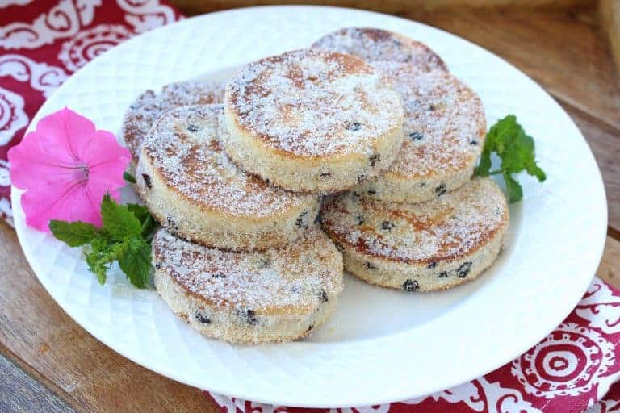

Back to recipebook
Recipe Source

Description:
Unforgettably flaky, tender, almost melt-in-your-mouth texture that’s punctuated with sweet currants and laced with a wonderful hint of mace, these Welsh cakes are simply irresistible! A thoroughly authentic Welsh Cakes recipe from generations past.
Ingredients:
- 2 cups all-purpose flour
- 1/3 cup caster sugar (do not substitute)
- 1 teaspoon baking powder
- 1/2 teaspoon ground mace
- 1/4 teaspoon salt
- 1/8 teaspoon ground cinnamon
- 2 ounces lard, chilled (about 4 tablespoons)
- 2 ounces butter, chilled and cubed
- 1 large egg, lightly beaten
- 1/2 cup dried currants
- 2-3 tablespoons milk
- granulated sugar for finished cakes
Instructions:
- In a bowl combine the flour, sugar, baking powder, salt, mace and cinnamon. Mix in the lard and butter using your fingers or a food processor until the mixture resembles coarse crumbs. Add the currants and stir to combine. Add the beaten egg and work it into the mixture adding a little milk as needed until you have a soft dough. It should not be wet or sticky. Wrap the dough and refrigerate for 30 minutes. (Dough can be made well in advance and chilled until ready to use.)
- Roll the dough out onto a floured or non-stick surface about 1/4 inch thick. Cut out rounds using a biscuit cutter. Gather up the scraps, knead together and roll out again to cut the remaining rounds.
- Heat and lightly butter a cast iron pan over medium heat (I lightly butter it to later help the sugar adhere to the cakes when they’re sprinkled). Add the cakes and cook on each side until lightly browned, about 3-4 minutes (lower the heat if needed to prevent the outside from burning before the interior is done).
- Let them cool for about a minute. While the Welsh cakes are still warm, place them in a small bowl of sugar to coat all sides. Best eaten while a little warm. Reheat Welsh Cakes in a pan, toaster, or warmed oven (or if in a hurry, in the microwave for a few seconds).